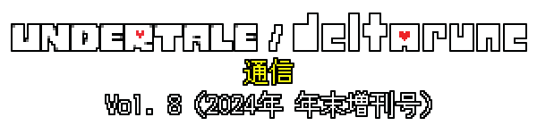 |
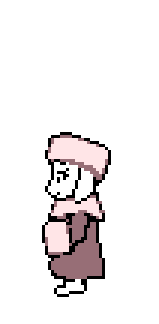 |
寒い。 |
地面は雪に覆われてしまった。 |
どこに何があるかわからない… |
とりあえず、上を見てみよう。 |
|

青い空だ… |
突然、頭上に影が現れた。 |
… |
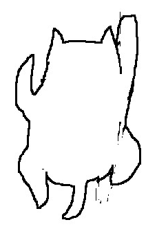 |
「ちょっと！さっきから、ワタシのマネしてない？ひょっとして、ワタシのこと、人生のお手本にしてる！？ |
そういうひとのことって、『フォロワー』っていうんでしょ？キミ、ワタシのフォロワーなの？なら、『チョウチョみたいな場所』でワタシをフォローしてよ」 |
（飛んでいってしまった…） |
読み方はたぶん…「ブルースキー」。 |
この場所で、僕はいろいろと探りを入れてみました。探りを入れて、その探りをもう一度取り出してからもう一度入れてみたりしました。ローストチキンの投稿を何件かして（ぱっと見、はしごをよじ登るイヌみたいだけど）、カーペットの歌なんかも作りました。 |
|
ブルースキーがどこかへ飛んでいってしまっても大丈夫なように、すべての投稿を思い出としてここにも上げておきます。そうすれば、みんなは、あのページを覚えておく必要もないでしょう。 |
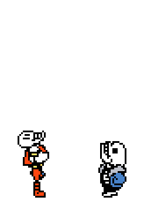 |

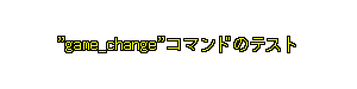 |
|
GameMakerの安定したバージョンのリリース待ちが4か月続きましたが、ようやくGameMakerをアップデートして、チャプターを切り替える新コマンド "game_change()"のオープンテストを行うことができました。 |
少し調整が必要な部分はあったものの、全体としては、問題なく機能するみたいです！ |
とはいえ、GameMakerをアップデートして、エンジンの基礎的な部分に多くの変更が入った影響で、ゲーム全体に予期せぬ問題がいくつも発生してしまいました。ゲームがクラッシュしたり、ずっと前に修正した古いバグがよみがえってしまったり… 可能なかぎり修正に努めましたが、全部を拾えているか、断言するのは難しいです… |
Chapter 3と4のリリース後にさらに大規模なGameMakerのアップデートを行わなくてはいけないので…今の倍の規模のゲームに、未知の新たなバグやクラッシュ、おかしな差異なんかが出てきてしまうかもしれません。 |
みなさんには、ゲーム制作の知られざるおもしろエピソードを知ってもらえたかな、と思います！ |
テストに参加してくれたみなさん、本当にありがとうございました！ |
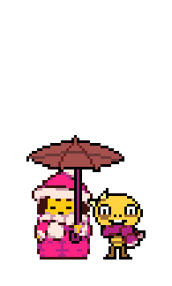 |

雪に、いにしえのクリスタル…的なものが埋まっていた。 |
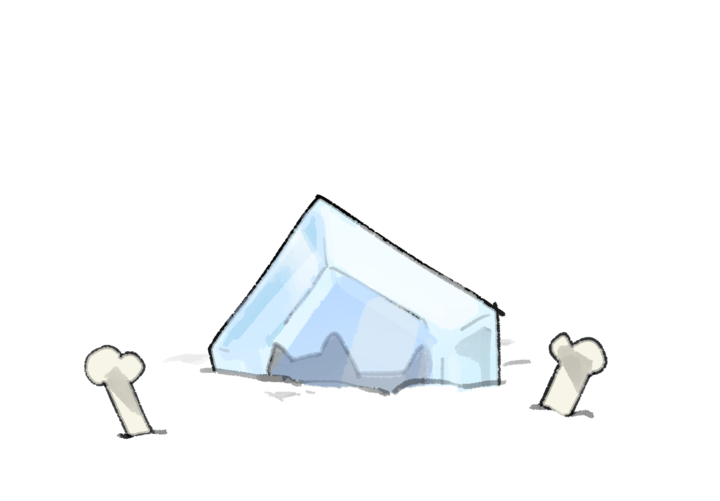 |
うーん、いかにも「いにしえ」っぽい。ひょっとしたら…2か月前のかも！ |
クリスタルは、メッセージを響かせた。 |
『DELTARUNE』が6周年を迎えました。
|
…たまらず、クリスタルを掘り出した！ |
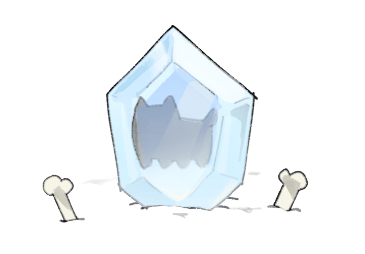 |
イヌは、時がたてば解凍されるようだ… |
…くれぐれも、「解凍機能」は使わないでください。毛が、クルクル、ベトベトになっちゃうので。 |
|

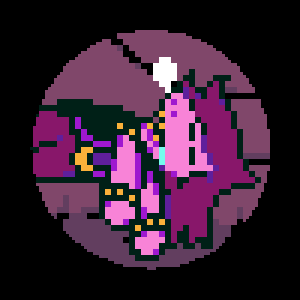 |
Chapter 3は、プロのテスターチームによるPC版のテストが終了しました。 |
思えば、不思議な気持ちです… いまのところ、Chapter 3をプレイした数少ない人たちに含まれるのは…どこかの部屋に閉じこもった、頼りになる精鋭チーム… Chapter 3を気に入ってもらえたか、すごく気になります… |
… |
よし。聞いてみよう。 |
… |
返事がきました！ まとめると… |
隠し要素が多くてテストをするのは大変でした…
|
ごもっともな評価ですね。セーブができない、長いセクションがある…が、どうやら楽しいらしい、と…（クルクル～）（イヌは、妙に人間っぽい両手の親指をクルクルした） |
いまのところのレビューは、そんなかんじ、と…（クルクル～）（イヌは、妙に人間っぽい両手の親指をクルクルした） |
ちなみに、テストチームから上がってきたレポートには、バグのように見えてじつはわざとな内容に関するものも、結構ありました… |
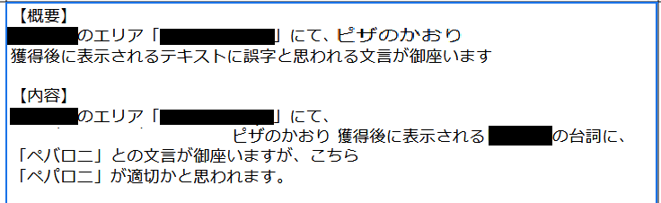 |
これで、Chapter 3はほぼ固まったといえます。残すは、コンソール版に関する作業だけ！ |
|
Chapter 4は翻訳の初稿が完成して、ゲーム内に実装されました！ |
翻訳はまだ仮の段階で、これからさらに変更が入りますが、一部、現時点での日本語版テキストをチラ見せしましょう！（翻訳の最終版が完成するまでには、まだあと数か月かかります） |
|
|
翻訳が完成に近づいたら本格的にPC版のテストを始めて、そのあと、Chapter 3と4のコンソール版のテストにとりかかります。 |
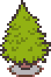 |


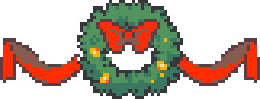 |
氷が溶けた部分が、ぽっかり空きスペースになっている… |
開発チームの一部のメンバーは、しばらくChapter 1～3のバグ修正に専念する必要がありましたが、最近チーム入りしたメンバーたちがそのあいだもChapter 5の制作作業を続けられたので、開発は引き続き順調に進んでいます！ |
今回は制作ペースがなかなか安定していて、多くの要素の開発を同時に進められています。 |
|

今回のグッズは日本ではまだ発売していませんが、日本の皆さんにも2025年1月にうれしいニュースを用意しています！ |
ある、11月の金曜日、空が「黒く」なって、新作グッズが公開されました。 |
いろいろありますが、ここでは2つ、取り上げたいと思います。 |
肌に貼りついて伸びる、長い仮面のようなシャツ。着ると、あなたと大切なつながりのある、大切なひとのように見えてしまう。 |
|
You。 |
Their love will become yours. |
Your love will become theirs. |
Fangamerから、ぬいぐるみの新作を出したいと言われました。なんでも、ヌイのぬいぐるみが欲しいという声が、たくさん届いているんだとか。ヌイ本人は、とても信じないでしょうね… |
そんなわけで、僕がデザインを考えることになりました。こちらがそのデザインです。 |
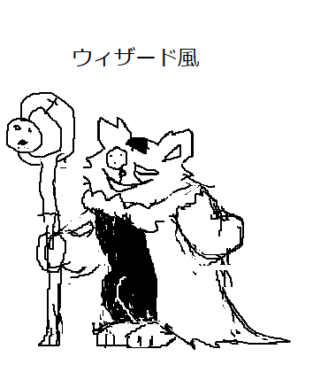 |
魔法をかけるのに使う、杖を持たせてみました。壊れた夢のようにキラキラ瞬く、ホコリみたいな魔法です。 |
それと、このぬいぐるみの姿が公式設定と思われがちですが…このぬいぐるみには、シッポはありません。フワフワの大きなシッポがあったほうがいいですかね？ひょっとしたら、愛にあふれる容赦のない手に、引きちぎられてしまったのかも…？いずれにせよ、あなたが心の中に描いているシッポは、僕が見せるどんなアイデアよりも強力なはず。だから、がっかりしないでください。 |
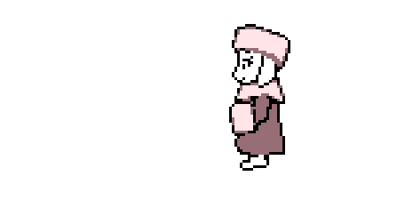 |

かめりあちゃまと僕で、セガの音ゲー『チュウニズム』に新曲を提供しました！ |
タイトルは、「Theatore Creatore」です。『チュウニズム』の曲は各曲にテーマキャラクターが設定されているんですが、今回の曲のキャラは「劇場支配人（じつはカオスの神）」です（セガさんのアイデア）。 |
これまでかめりあちゃまとコラボしたときはいつもそうでしたが、今回も僕はメロディーの一部を作曲して、あとの大変な部分は全部、かめりあちゃまがやってくれました。 |
ちなみに、セガさんからは「こんな感じの曲がいい」という参考例が送られてきたんですが、その曲は… |
「THE WORLD REVOLVING」でした… |
いやいやいや… |
なにはともあれ、気に入ってもらえるとうれしいです！ |
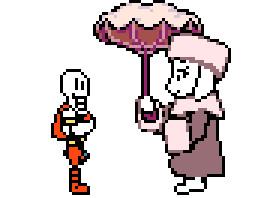 |
今年のハロウィンの日に… |
「Chapter 3と4は2025年にリリースする」と発表しました。 |
これは、100000000000％、本当です。 |
それプラス、今はまだ発表できない、最高にヤバいアレやコレに関する作業も進めています。 |
まだまだ先は長いですが、2025年はだいぶおもしろい年になりそうです…！ |